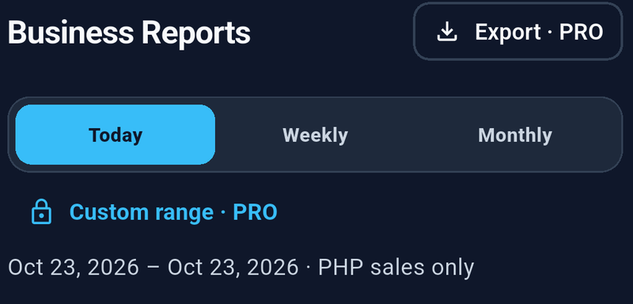
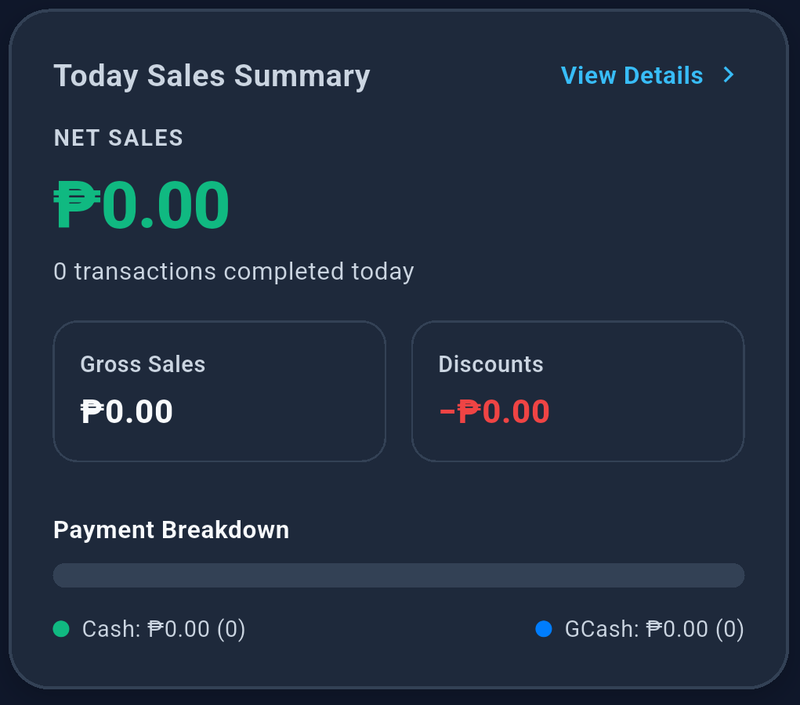

Open Reports and select a period. Check the displayed start and end dates.
| Period | What it includes |
|---|---|
| Today | The current calendar day according to your device’s local time. |
| Weekly | The current calendar week, Monday through Sunday. |
| Monthly | The current calendar month. |
| Custom | Your selected start and end dates, including both full days. Requires Pro. |
Weekly and monthly reports use calendar periods, not the last 7 or 30 days. Keep your device’s date, time, and time zone correct.
Read the totals


| Metric | Meaning |
|---|---|
| Gross sales | Recorded sales amounts before discounts. |
| Discounts | Discounts applied to the included sales. |
| Net sales | Gross sales minus discounts. |
| Transactions | Completed orders. A checkout with several products counts as one transaction. Older standalone sale records may count individually. |
| Payment breakdown | Included sales grouped by Cash and GCash. |
These totals describe recorded sales. They do not calculate profit after product costs or operating expenses, and they do not verify money in your cash drawer or payment account.
Open the sales breakdown to inspect the sales behind a selected period. Use the history feed to review inventory activity. History search and filters affect that feed; they do not change the sales summary or the exported sales report.
Check the report currency
Reports initially use your app currency. Use the report-currency selector to review another currency.
Only sales recorded in the selected currency contribute to the monetary totals. StockLite does not combine different currencies using exchange rates. Older sales without a saved currency are treated as Philippine pesos (PHP).
If sales appear missing after changing currency, select the currency used when those sales were recorded. History entries retain their original sale currency.